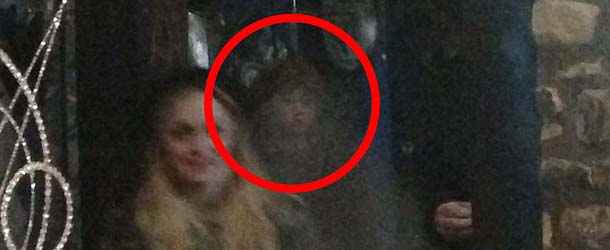

En 1975, la familia Lutz huyó de su nuevo hogar tras 28 días de fenómenos aterradores: voces, fluidos extraños y levitación. El archivo original está clasificado como **Peligro Nivel 9**.
El Horror de Amityville
Un archivo de posesión y terror documentado en Long Island, NY.

Los Espectros de la Torre de Londres
Se reportan avistamientos de Ana Bolena y Lady Jane Grey. El fenómeno consiste en apariciones residuales y psicofonías, sin riesgo directo. **Clasificación Nivel 2**.
Los Espectros de la Torre de Londres
Historias de ejecuciones y apariciones reales en el histórico castillo.
El Proyecto MKULTRA
Investigación de la CIA sobre control mental a través de drogas y tortura psicológica. Un archivo de **Teoría de Conspiración** con documentos desclasificados.
El Proyecto MKULTRA
Teorías de control mental y experimentos gubernamentales.
Casos Recientes en Archivo
Cargando archivos de casos destacados...
Documental: ¿Estamos Solos?
Fuente: Netflix España. Top de documentales sobre relatos paranormales reales.